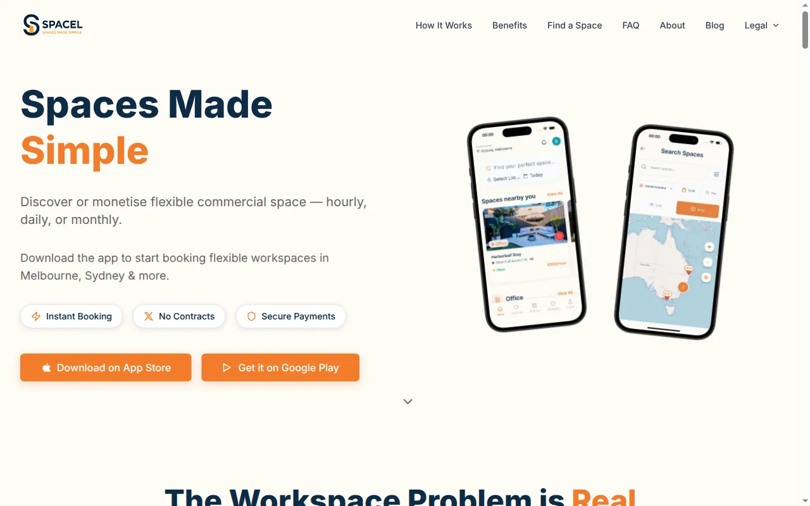

LIVE PRODUCT01 / 09

spacel.app
One of the main developers — developed both the iOS and Android apps and the website, building and maintaining features across the product.
Developer at Zynra Studio, core developer at spacel.app — building web, mobile & AI products end-to-end, and evaluating AI.
01 / SELECTED WORK
Products, experiments and the capabilities behind them.
9 of 9 items

One of the main developers — developed both the iOS and Android apps and the website, building and maintaining features across the product.

An AI luxury perfume finder that helps you discover your signature scent.

A fitness tracker for logging workouts and following your training progress.

A food discovery app for finding restaurants and dishes worth travelling for.

An AI study planner that organises study tasks, focus sessions and revision plans.
AI-powered web applications and automation tools, built around practical product workflows.
From implementation through to production-ready delivery, using Next.js, Supabase and modern AI dev tools.
Designs optimised for performance and user retention, contributing to usability and engagement.
A rubric-based system for rating and comparing AI responses, built from 900+ hours of self-directed study — the quality lens applied to every build.
No matching work. Try a different search or filter.
02 / PUBLIC EVIDENCE
Explore the live projects, inspect the source, or try the evaluation framework for yourself.
One product website and four interactive web apps. Open the real pages, not just the screenshots.
The four selected web apps have public code on GitHub. Read the implementation alongside the running project.
Each evaluation criterion opens to show what I check and what gets flagged. Explore the framework behind the practice.
PROJECT STUDY / SPACEL.APP
As one of Spacel’s main developers, I developed its iOS and Android apps and its website. My role includes building and maintaining features across the product.
Spacel’s live site presents a flexible workspace marketplace for hourly bookings, starting with Melbourne and Sydney. It connects space seekers with space partners.
I am one of the main developers, contributing to the apps and website rather than owning only one surface of the product.
Zynra’s published project study describes booking availability, location-based search and multi-party payments, with React Native and Next.js in the stack.
Sources: my CV — role & platform scope; Spacel — product & launch cities; Zynra — project engineering scope.
PRACTICE STUDY / AI EVALUATION · 2024–PRESENT
My evaluation work spans Outlier AI, Scale AI, Appen, OneForma and Test IO. At Outlier, I have assessed thousands of responses against structured rubrics, flagging hallucinations and reasoning failures with detailed justifications.
A response can sound convincing and still be wrong, incomplete or unsafe. I judge it against the actual request and the project’s guidelines, not how polished it sounds.
Assess factual correctness, reasoning and instruction adherence. Compare responses side by side, flag unsupported claims, and judge clarity, completeness, tone, safety and usefulness.
A rubric-based assessment or preference ranking with a written justification. The decision is explained through specific strengths and failures in the response.
Experience figures: my CV (PDF). Framework: eight inspectable criteria.
Eight quality criteria. Open one to see what I check and what gets flagged.
Every factual claim is verified — independent research and cross-referencing. Factual errors are separated from opinion, inference and uncertain claims, and unsupported claims are called out, even when plausible.
Hallucinations, misinformation or unsupported claimsJudged against what was actually asked, not what it chose to answer — compliance with project guidelines, format, scope and constraints.
Requirements missed or constraints ignoredRead end-to-end for internal consistency — no contradictions; logical gaps identified systematically.
Inconsistencies, contradictions or reasoning failuresClarity, grammar and written accuracy, with tone appropriate and consistent throughout.
Tonal inconsistencies or unclear writingThe reasoning itself is judged, not just the final answer — stronger reasoning wins side-by-side comparisons.
Broken chains, skipped steps or unsupported conclusionsRelevance to the request, plus depth and usefulness for the audience.
Off-topic, padded, or correct but not usefulEvery part of the request covered — multi-part prompts checked part by part.
Parts left unanswered or the response stops shortReviewed as a standing criterion on every response, against project safety guidelines.
Any breach of safety guidelines, whatever its other scoresGraduated with distinction; foundation in algorithms, systems and analytical problem-solving.
★ First Class Honours03 / SERVICES
From a focused project to an end-to-end build. We agree the right scope directly.
React.js, Next.js & Supabase builds, APIs, HTML/CSS/JavaScript — end-to-end, production-ready.
iOS & Android development, as delivered for spacel.app alongside its website.
Rapid prototyping and scalable MVP delivery — a named strength on the CV, with modern AI dev tools (Cursor, Lovable, Bolt, v0).
AI systems, agents and workflow automation, plus AI-powered web applications.
UI/UX design, product design and prototyping focused on usability and retention.
Response evaluation, ranking and QA against structured rubrics — from work with Outlier AI, Scale AI & Appen.
04 / PROCESS
Requirements, implementation, review and delivery — connected.
One email to bremchevy@gmail.com with what you need built or evaluated.
Requirements, implementation, review and delivery — with one person connecting every phase.
Production-ready delivery, refined with the same rubric discipline used in AI evaluation work.
05 / NEXT PROJECT
Email me directly — for product builds, MVPs, or work that needs building and AI evaluation in one person.
bremchevy@gmail.comOSOGBO, NIGERIA / WORKING WORLDWIDE